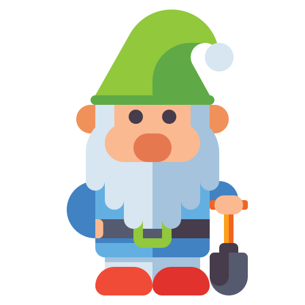

Get Gardening
What plants do snails like to eat?
Snails love to eat garden plants. Often they have their favourites. In the chart below, you can see some of the plants eaten in just one night. Can you spot the ones they liked most?
Let's play a game!
Watch out, there are snails in this garden and they want to eat your plants!
Press SPACEBAR to jump.


High Score:0
Jumps:0